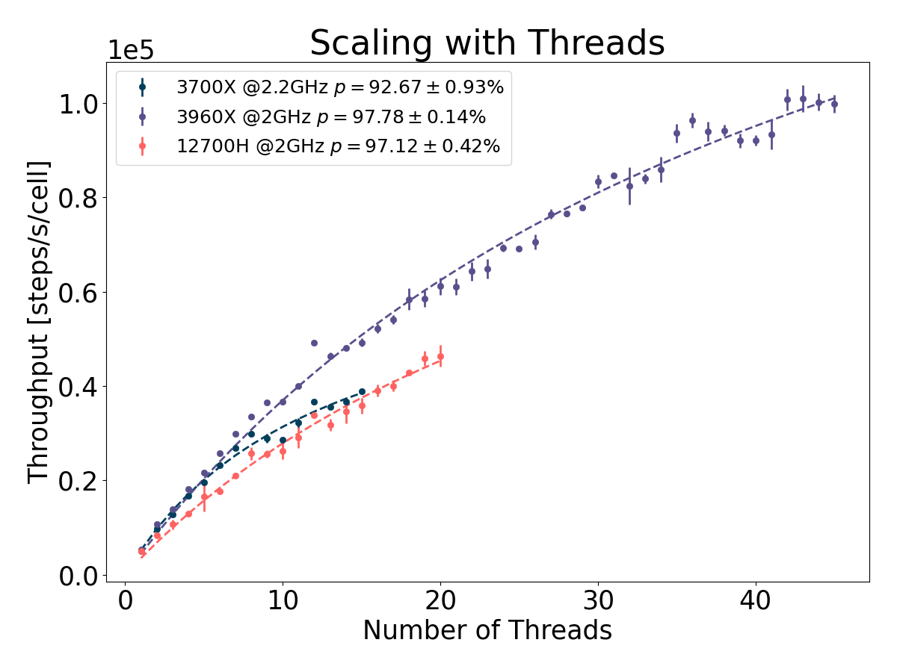
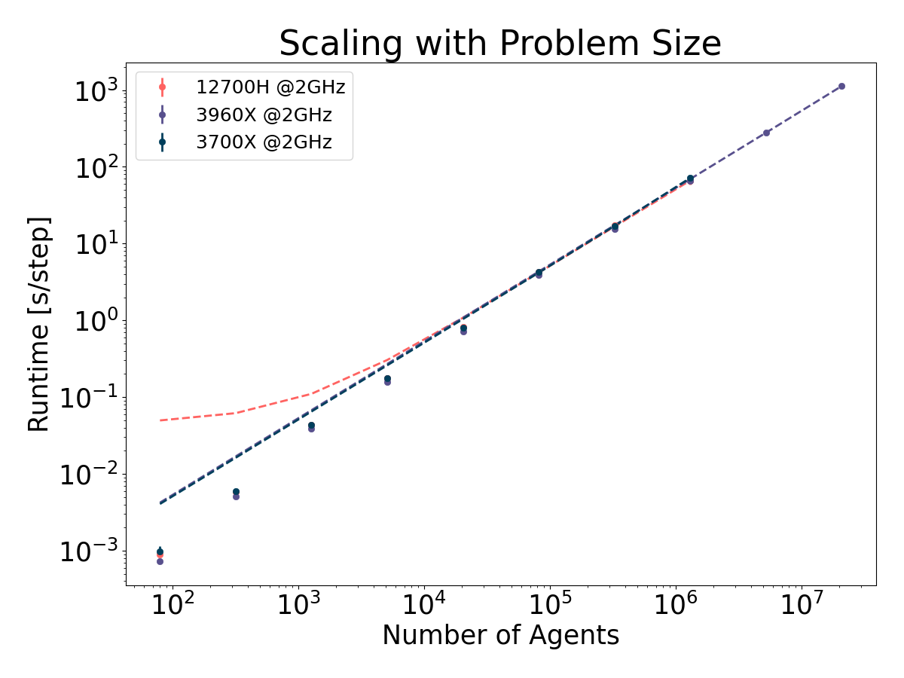

Jonas Pleyer
 - Cellular Agent-based Modeling from a Clean Slate
- Cellular Agent-based Modeling from a Clean Slate
04/06/2025
cellular Agent-based Modeling
from a Clean Slate
04/06/2025
Jonas Pleyer

Bacterial Branching
- Initially placed in center square
- Bacteria consume nutrients, grow and divide
Cell Sorting
- Species-specific interaction
- Only 4 Parameters:
Radius $r$, Damping $\lambda$, Interaction Range $\sigma$, Potential Strength $V_0$
Bacterial Rods
- Species-specific interaction
- Only 4 Parameters:
Radius $r$, Damping $\lambda$, Interaction Range $\sigma$, Potential Strength $V_0$
Estimate Parameters from Microscopic Images
Estimate Parameters from Microscopic Images
Generate Realistic Microscopic Images + Masks
Performance


Documentation
Thanks for Listening
I am open to work at the end of the year.